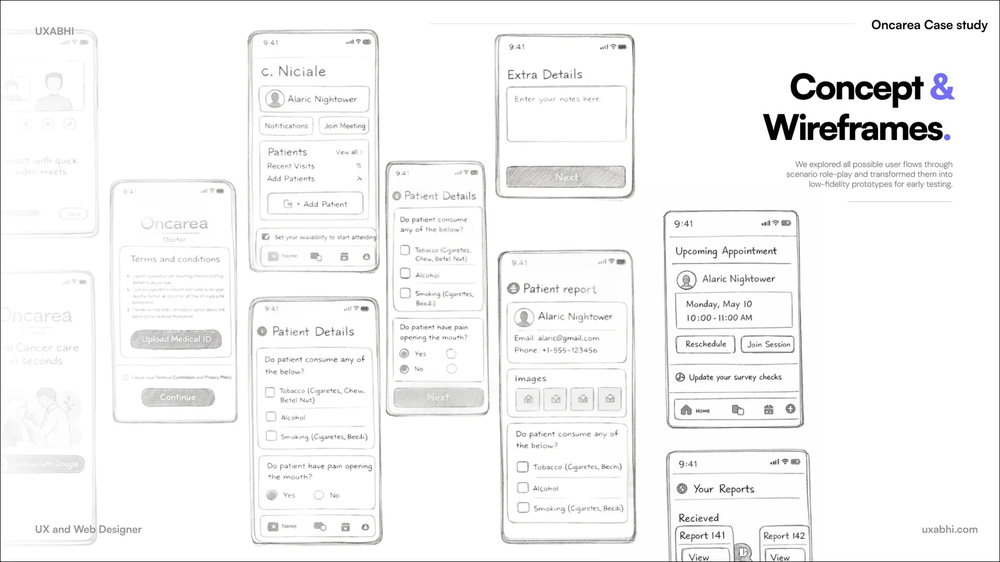
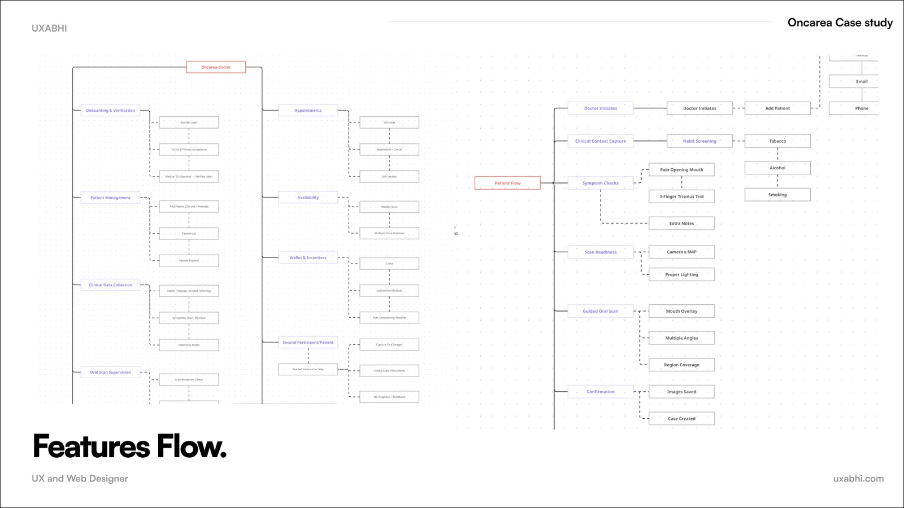

Information architecture of the doctor app
Four tabs, matching the four things a doctor does in a day: see today, handle appointments, set availability, manage the account. Screening lives one tap from Home, because it is the reason the app exists.
Feature map
User flows
Concept and wireframes
We explored every possible flow through scenario role play, then turned them into low fidelity pencil prototypes for early testing.

Low fidelity wireframes: home, patient details, extra details, patient report and appointments

The original feature flow from the project deck